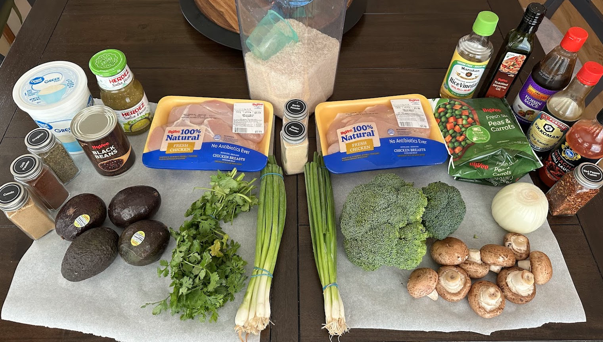
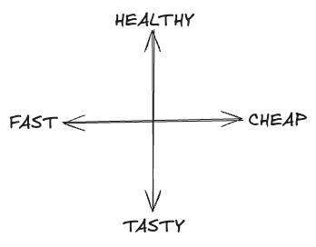
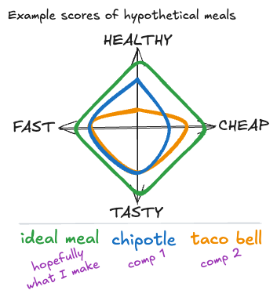
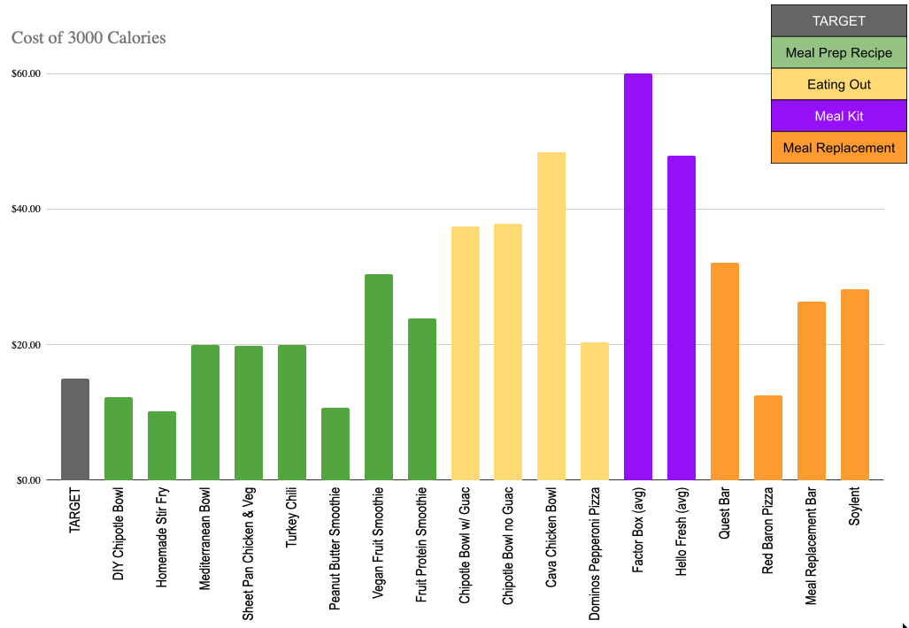
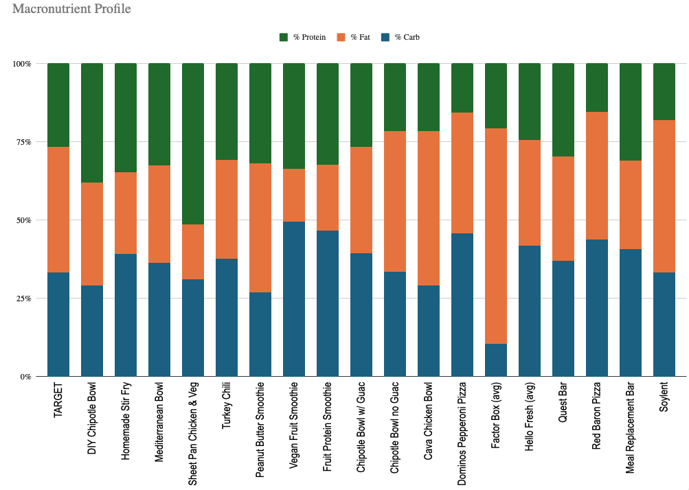

A very specific Column in which I say much less than I wanted to, and spent much more time than expected to say what I do. I’ve been working on this post since February.
Tldr
See this spreadsheet.

Preamble - What’s My Goal Here?
Every time you eat you make a decision that impacts your 3 Resources.
- Energy - am I eating something nutritious, that will boost my mood & effectiveness in my day, while supporting my health?
- Time - did this take me a long time to prepare, or go get?
- Money - am I spending a lot of money on this?
Yet we often default to some convenient/easy choice when it comes to eating, and this “default choice” is often a bad one. We spend too much money and/or time, and/or settle for something unhealthy or un-tasty that won’t support our energy.
Today’s Column is about making better default choices for food.
Goal
Figure out & streamline better "default" meals that mutually optimize for time, nutrition, taste, and money

For time, I’ll use cumulative as-measured cooking, cleaning, reheating, & consuming times, divided by meal count. For price, I’ll use the current price (October 2025) of these items at Costco & my local grocery store. For health, I’ll use macronutrients, fiber, & added sugar goals. For taste, I’ll use my mouth.
Measurables
Specific daily goals:
These goals pertain to my particular goals & context. Yours would be different.
- $20, all-in
- $7300 per year
- Bulk prep, optimizing for time & storage
- 3,000 calories
- 40/33/27 carbs/fat/protein
- 200 g protein
- 133 g fats
- 250 g carbs
- At least 35g fiber
- No more than 30g added sugar
Approach
- Identify quantified goals (see above)
- Research online & use LLMs to find recipes
- Find pre-produced comps for recipes to use as baseline
- Buy ingredients & cook meals
- Eat meals mindfully
- Examine cumulative cost, time, nutrition, and subjective experience when compared to baseline comps
- Arrive at good, well-reasoned default meals to use when no other inspiration hits

Meals
Details
I created this spreadsheet with much more detail than what I’m sharing here.
Each of these meals can be prepared in bulk and store nicely.
The ideal meal is something that can be:
- prepped in bulk fairly easily
- stored without losing flavor or texture
- reheated easily
- modified easily to keep it not boring
Ultimately, I came up with five recipes that fit these criteria1 - and compared them to several other available options.
Summary
Meal prepping really is the way to go. I bailed on my ambition to actually make these meals2 and time myself, then compare that to the alternatives. Maybe someday I’ll amend my spreadsheet with an analysis of time. I did complete the analysis of cost & nutrition, though. Also - I have cooked (nearly) all of the meals at least once.
Meals
The spreadsheet includes ingredients & recipes for these.
The following tables normalize to 3000 calories. Each row shows the macros, added sugars, fiber, and cost of getting 3000 calories’ worth of each meal.
| Meal | Carbs | Fat | Protein | Added sugars | Fiber | Cost |
|---|---|---|---|---|---|---|
| GOAL DAILY INTAKE | 250.0 | 133.0 | 200.0 | 15.0 | 35.0 | $15.00 |
| Homemade Stir Fry | 301.4 | 83.6 | 254.9 | 13.7 | 9.6 | $12.09 |
| Peanut Butter Protein Smoothie | 209.3 | 143.0 | 247.7 | 17.4 | 24.4 | $10.62 |
| DIY Chipotle Bowl | 208.1 | 105.1 | 271.8 | 0.0 | 19.6 | $12.26 |
| Sheet Pan Chicken & Veg | 231.6 | 57.4 | 382.6 | 0.0 | 34.3 | $19.75 |
| Mediterranean Bowl | 275.6 | 104.8 | 246.5 | 25.1 | 36.4 | $19.89 |
| Turkey Chili | 282.5 | 104.7 | 231.1 | 4.0 | 105.2 | $19.98 |
| Fruit Protein Smoothie | 381.4 | 76.3 | 264.4 | 10.2 | 61.0 | $23.84 |
| Vegan Fruit Protein Smoothie | 421.3 | 63.8 | 287.2 | 12.8 | 83.0 | $30.36 |
Looking at comparisons:
| Meal | Carbs | Fat | Protein | Added sugars | Fiber | Cost |
|---|---|---|---|---|---|---|
| GOAL DAILY INTAKE | 250.0 | 133.0 | 200.0 | 15.0 | 35.0 | $15.00 |
| Real Chipotle Bowl with Guac | 296.3 | 113.4 | 201.2 | 0.0 | 40.2 | $37.46 |
| Real Chipotle Bowl no Guac | 254.3 | 151.4 | 162.9 | 0.0 | 42.9 | $37.86 |
| Cava Chicken Bowl | 223.1 | 167.3 | 165.4 | 15.4 | 34.6 | $48.38 |
| Dominos Pepperoni Pizza | 331.0 | 124.1 | 113.8 | 0.0 | 10.3 | $20.35 |
| Factor Box (avg) | 80.0 | 235.0 | 160.0 | 0.0 | 25.0 | $59.95 |
| Hello Fresh (avg) | 300.0 | 107.1 | 175.7 | 4.3 | 17.1 | $47.83 |
| Quest Bar | 357.1 | 142.9 | 285.7 | 0.0 | 171.4 | $32.07 |
| Red Baron Pizza | 340.0 | 140.0 | 120.0 | 10.0 | 20.0 | $12.48 |
| Met-RX Super Cookie Cruch Bar | 307.3 | 95.1 | 234.1 | 175.6 | 14.6 | $26.34 |
Cost

Against my goal of ~20 or less, which is the same cost as the absolute cheapest place you can eat out that I analyzed.
Macros

This part of the analysis wound up being less interesting to me. There’s a wide variety of macro ratios available. The closest to my “ideal daily macro ratio” is either my Peanut Butter Protein Smoothie or a real Chipotle Bowl with Guac. Shout out to Soylent for being pretty close, too. Living up their promise on that.
There’s more to health than macros, though. The recipes and Chipotle/Cava/Hello Fresh/Factor meals are probably what I’d rate as “healthiest”… but I’m no nutritionist nor a doctor. I’m a man with a spreadsheet.
Top 5: Lessons Learned
5. My DIY Chipotle Bowl is almost perfectly in-line with every goal I had
Nice to see analysis result in your gut assumption being more or less true.
4. Meal Kits are generally not a great idea
Don’t get me wrong - I’ve used and really benefitted from Hello Fresh, Blue Apron, and maybe one other. They taught me how to cook lots of stuff I wouldn’t otherwise know how to cook and introduced me to things I hadn’t tried before… but beyond their educational and novelty aspects - they are expensive and not fast.
3. Creating easy-button shopping lists is a great hack
I have a button I can push on my phone that creates the shopping list I need to meal prep. I have a second button that pre-loads my online shopping cart at our local grocery store with these ingredients.
2. Doing this type of analysis is so tedious and long
This whole project took roughly 40 hours, if I had to guess. Between ideating meals & research, checking prices and nutrition, building and refactoring the spreadsheet, finding comps, and putting together this Column… it was a lot.
1. You should prep your own meals
It’s cheaper, more consistently healthy, and not actually much more time-consuming if you optimize your shopping.
Quotes:
Where is our team gong? I’ll put that on my Christmas list. - Fintel
I was confused about what kind of popcorn I had in my eyelashes. - Melissa